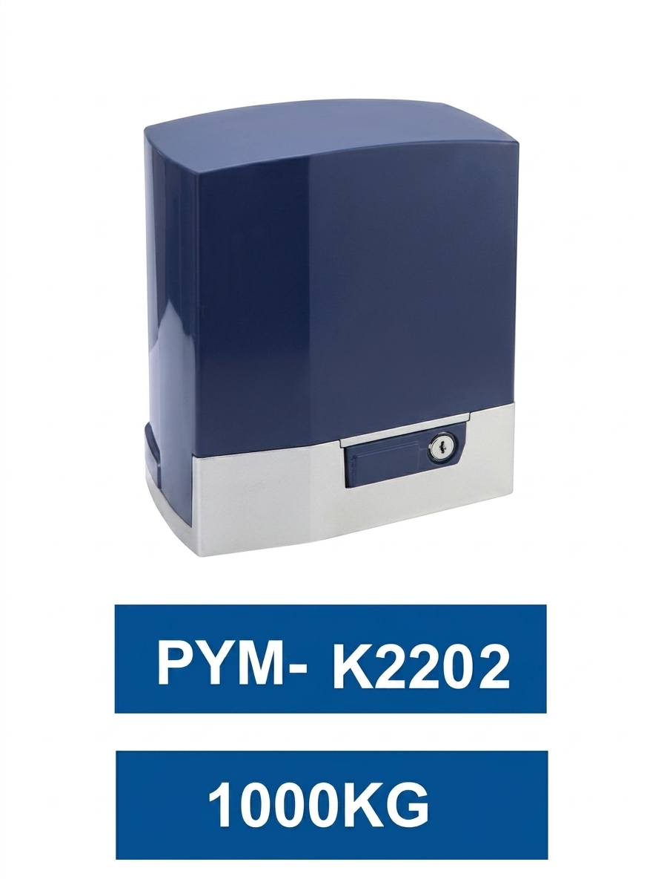
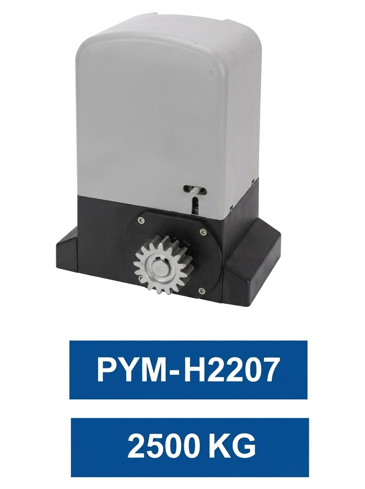
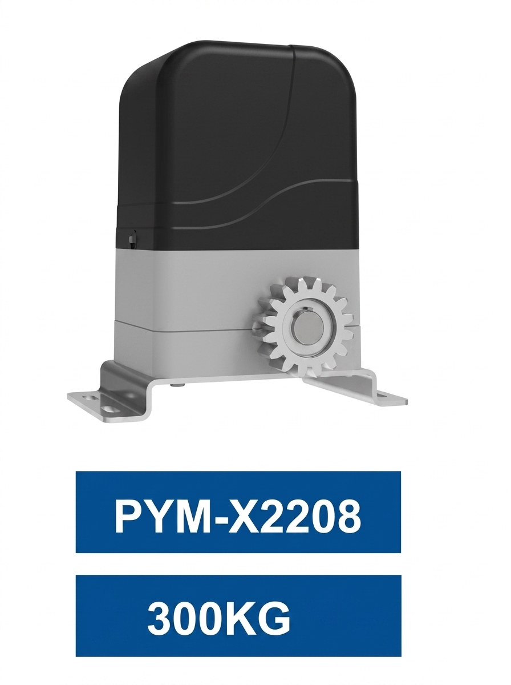
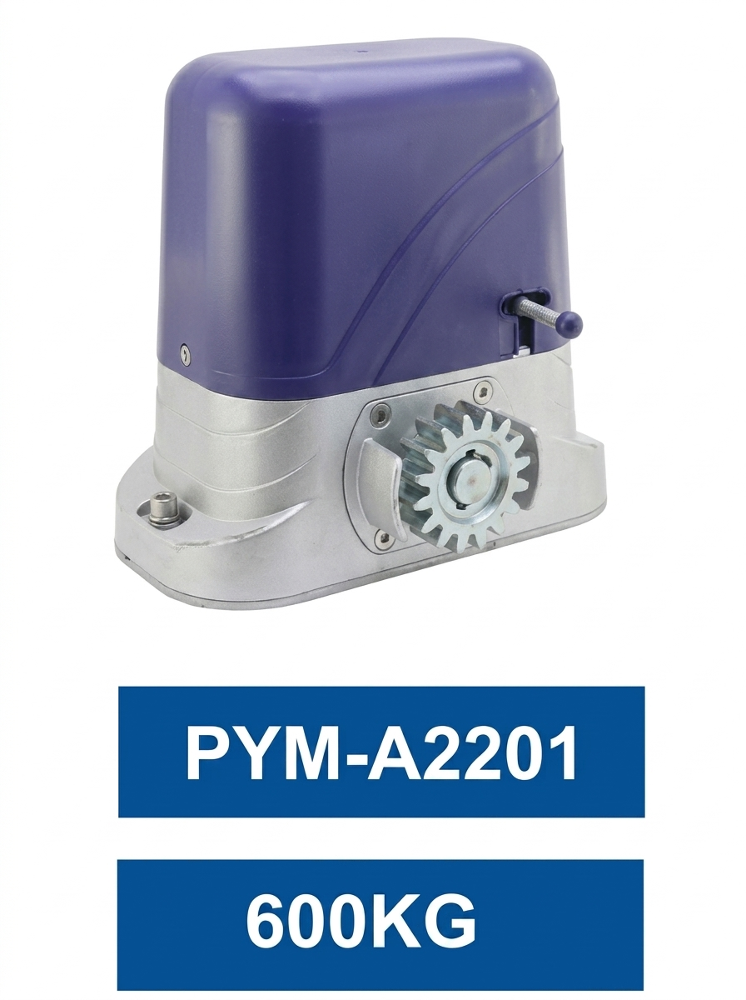
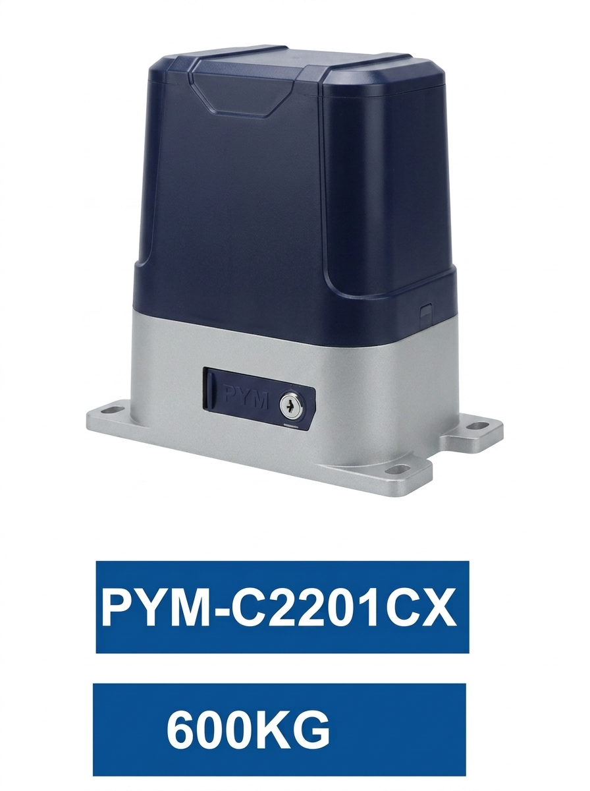
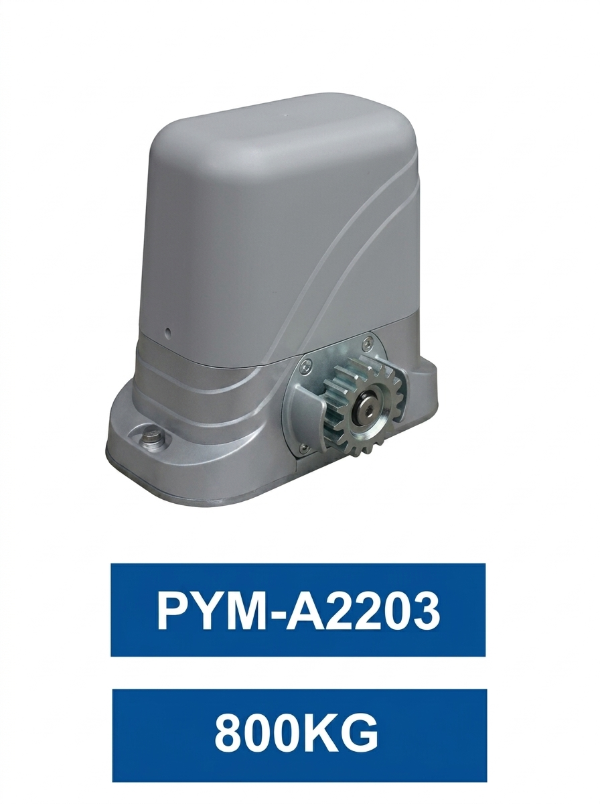
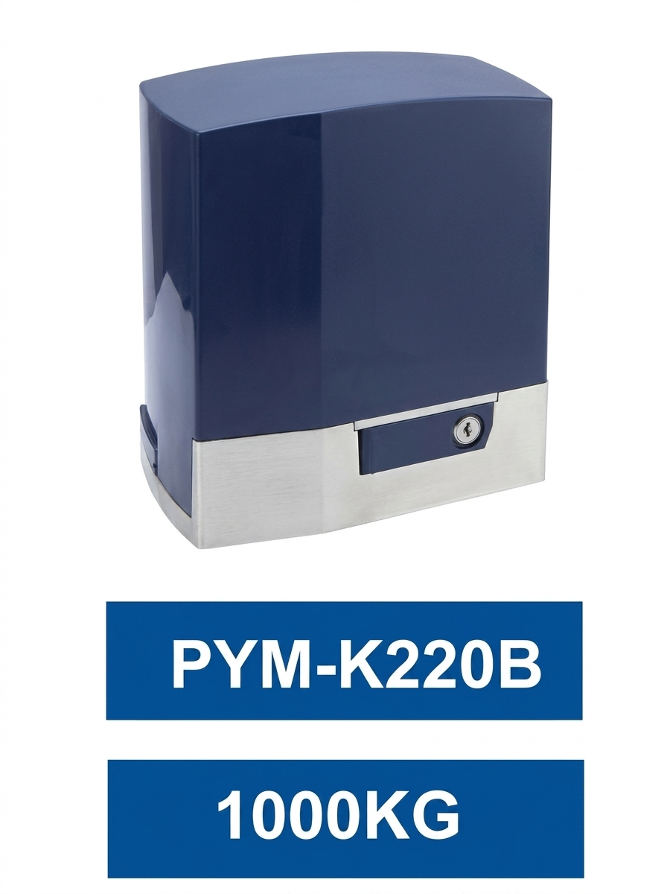
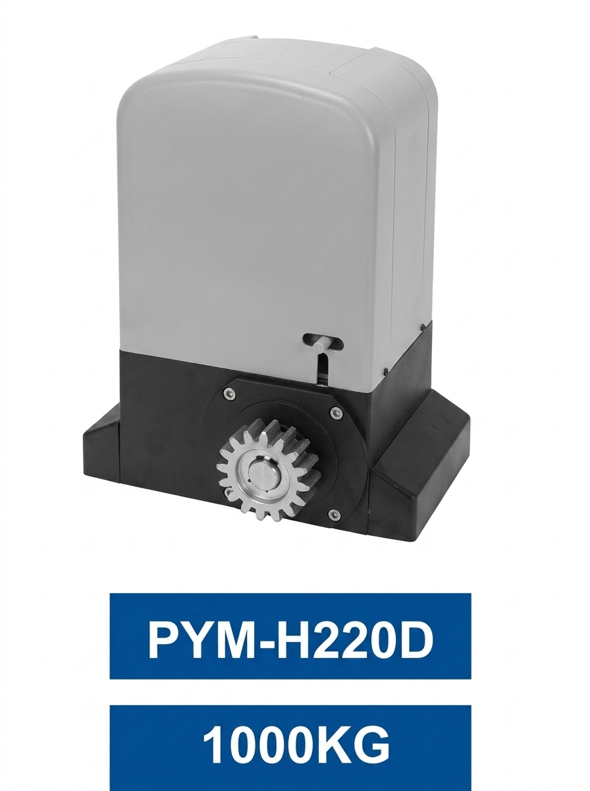
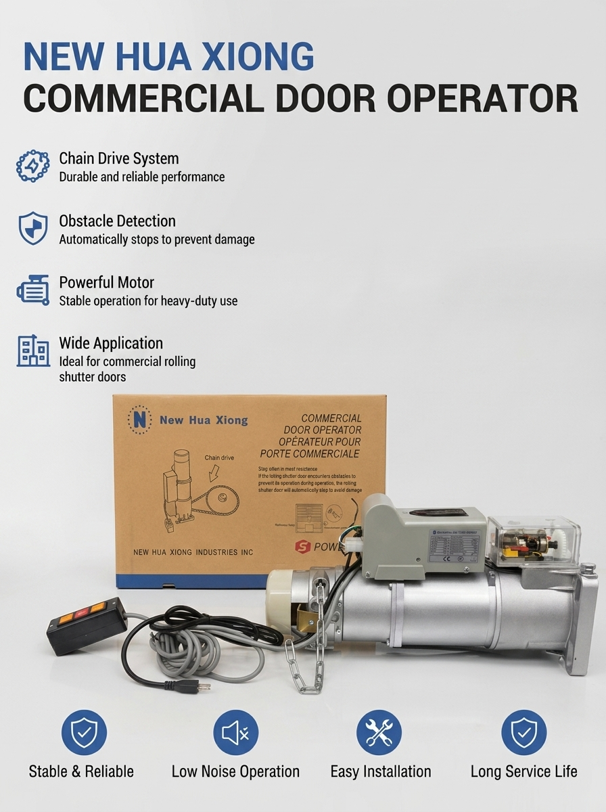
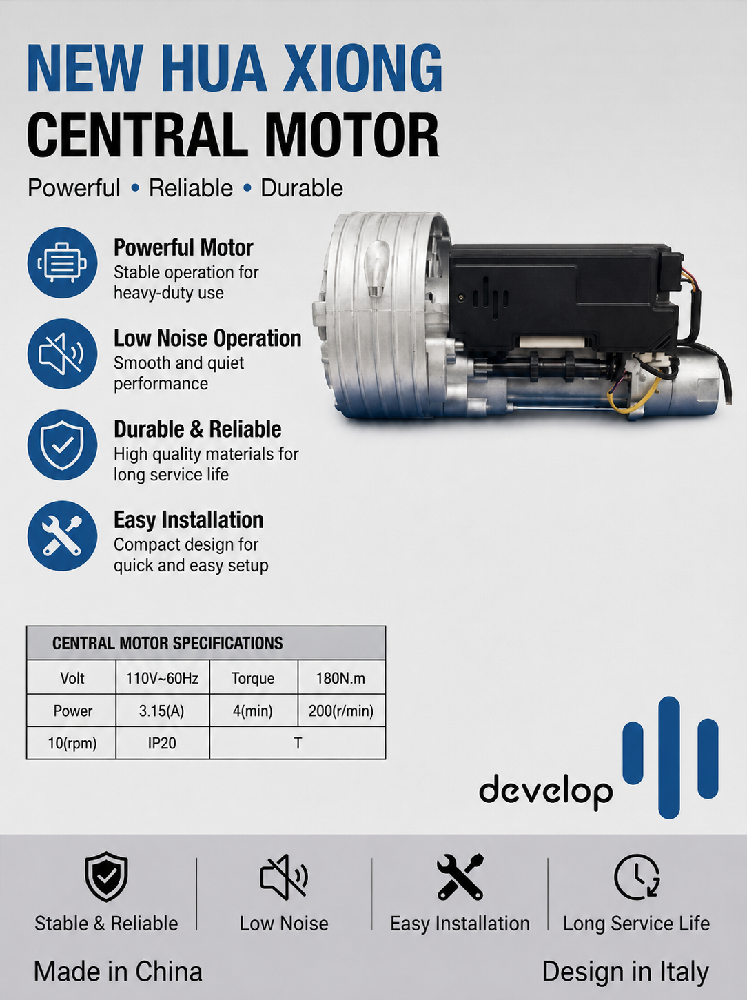

Gate & Door Automation Motors
Heavy-duty sliding gate operators, central rolling motors, and commercial door automation systems.

Model PYM-K2202
Capacity: 1000 KG
Sleek commercial gate motor unit with key-lock release system and high-torque performance for heavy sliding gates.

Model PYM-K220B
Capacity: 1000 KG
Reinforced heavy-duty motor module engineered for consistent power delivery and integrated safety locks.

Model PYM-H2207
Capacity: 2500 KG
Ultra heavy-duty industrial operator designed for maximum load capacity up to 2500kg and high-frequency access.

Model PYM-X2208
Capacity: 300 KG
Compact external gear drive motor optimized for residential gates and lighter commercial installations.

Model PYM-A2201
Capacity: 600 KG
Medium-duty sliding gate opener with manual override clutch and durable housing protection.

Model PYM-C2201CX
Capacity: 600 KG
Weather-resistant enclosed motor casing with built-in control board access and security override.

Model PYM-A2203
Capacity: 800 KG
Robust 800kg automated gate motor with precision gear assembly designed for smooth and quiet drive action.

Model PYM-H220D
Capacity: 1000 KG
Industrial 1000kg rack-and-pinion drive system featuring manual release level and durable composite casing.

Commercial Door Operator
Application: Rolling Shutter Doors
Heavy-duty commercial door operator featuring chain drive system, obstacle detection, and low noise operation.

Central Motor
Specs: 110V ~ 60Hz / 180N.m
Italian-designed powerful central rolling motor delivering stable, low-noise operation for rolling shutters and doors.